Rhythmic Shaker:
This was the activity that started the fascination with DIY musical instruments
for my boys. A classic really, but with a neat twist.
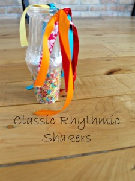
Kalimba Musical Instrument by Herding Cats George:
A paper plate (and we all know my love for a good paper plate craft!) and some
popsicle sticks make this craft perfect for using what you have on hand!
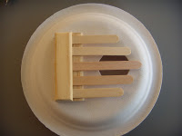
Nutshell Musical Instrument by Artists Helping Children:
Now this is an easy homemade instrument! A nutshell, rubber band, and a stick is
all your little one needs to get rocking.
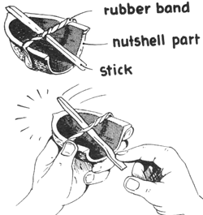
Rainstick by FSPDT:
I used a rainstick in my Kindergarten classroom as a way of getting little ones
attention and preparing them for transitions – but it also makes a unique
homemade musical instrument!
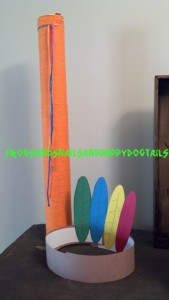
Noisemakers also by FSPDT:
sometimes it is the simplest of things that spark the most creativity in my
little ones – these simple shakers are great musical instruments!
Rainbow Xylophone by And Next Comes L:
Nothing quite as inviting as playing with rainbow colours on a dull winters day!
This craft will be tucked safely up my sleeve until February I do believe
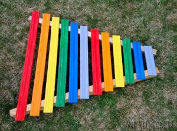
Steel Drums by Sugar Aunts:
This post is all about a Rockin’ Drum Birthday Party – loads of ideas for
homemade drums and more!
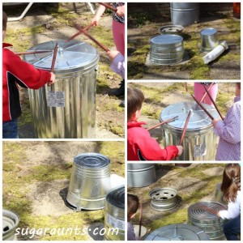
Wooden Xylophone by In Lieu of Preschool:
What a neat idea! I love the trick of using colours to help teach little ones to
play music.
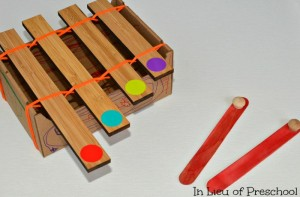
Rainbow Water Xylophone by Still Playing School:
Another classic homemade musical instrument with a twist! What a neat idea to
add some food colouring … and a light table!
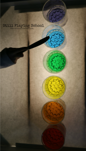
Pin Strummer by Piikea:
This one was new to me but looks so simple, interesting, and inviting I can’t
wait to give it a try (or should I say a DIY) with my kids
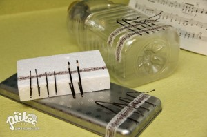
Bop-o-phone by My Musical Magic:
Homemade musical instruments in general are great to brighten dull days, this
bop-o-phone looks like it brighten even the darkest, greyest of winter days!
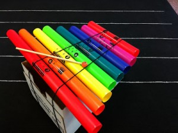
Sensory Bin Shakers by Fun-a-day:
such a lovely way to extend on a sensory bin.
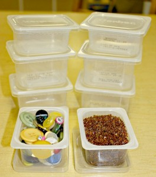
Matchbox Guitar by Martha Stewart:
incredible homemade musical instruments AND fantastic for fine motor skill
development. Can’t beat it!
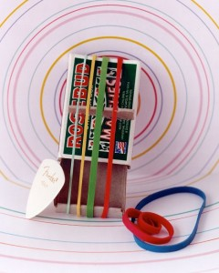
Pot Bell by Play, Sing, Laugh:
we have a few terra cotta pots left over from the summer that could be put to
good musical use this winter.
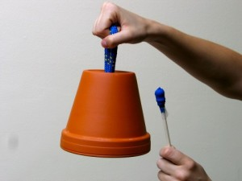
Tubaphone ALSO by Play, Sing, Laugh:
well, just look at it!! I am surprised I am still sitting here writing and not
creating one of these myself right now!
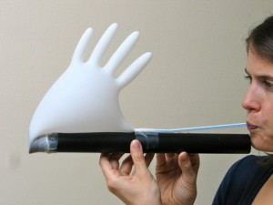
Melody Pole by Timotay Playscapes:
Because even in the winter, we will be outside everyday!
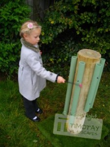
Disc Cymbals by Happy Hooligans:
so simple, fun, and creative! And I bet they are a nice quieter alternative to
some homemade cymbals.
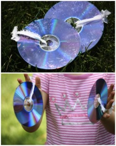
Balloon Bungo Drums:
such a neat idea to use balloons for the drum surface!
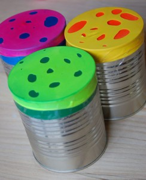
Wrench Xylophone by De Tout et De Rien:
This has my Sammy’s name written all over it. I will have to wait for a weekend when our wrenchess will not be needed for awhile. I have a feeling after we make this we won’t be able to wrench (?) for a few weeks.
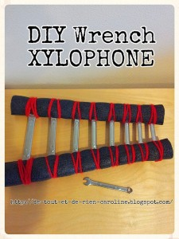
Paper Plate Tambourine:
A classic activity with some weaving too – a great way to practice fine motor skills while creating homemade instruments! A paper plate, some jingle bells and yarn or string are all you need.
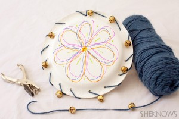
jingle bells:
such a lovely musical instrument for little musicians!
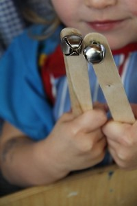
Den Den Drums:
I had never thought to use a wooden spoon for a drum such simple creativity!
French Horn:
Bet you have never
seen a french horn quite like this one! For us, it will require some
supplies we don’t have at home like a funnel and corrugated
pipe but it just might be worth the trip!
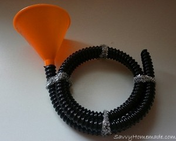
Chicken in a cup:
learn something new every day, right?
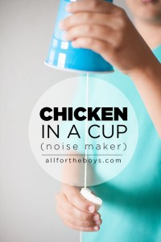
Ankle Bells:
I think that this knitted project is just what my daughter Madeline has been looking for to create homemade Christmas gifts for her brothers! The Colourfull is gorgeous too.
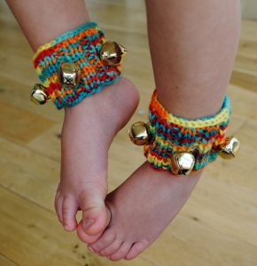
Fancy Egg Shakers:
we love this classic homemade musical instrument for kids.
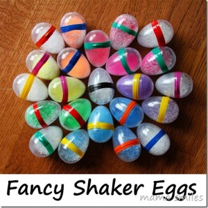
DIY Rain Sticks:
My little ones would love creating this version of a rain stick.
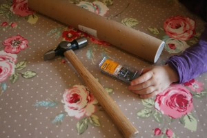
Maracas:
What a simple, creative idea!
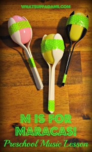
Whisk Maracas:
I love that you can make this for your little ones in a matter of moments, perfect for in the kitchen when making dinner too.
Cardboard Rattle Drum by Pink
Stripey Socks :
This is a neat instrument for preschoolers to explore.
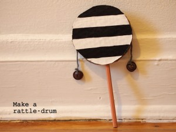
DIY Didgeridoo:
Because some days you just need to make a Didgeridoo.
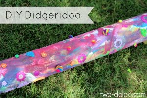
Coconut Shell Instruments:
This one is such a unique idea! What a fun way to explore sound.
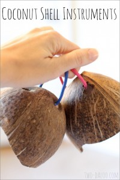
Aboriginal Clapping Sticks:
a wonderful homemade instrument to practice rhythm and beat.
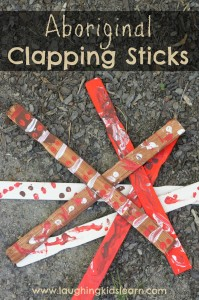
Banging wall by SouleMama:
such a lovely, open-ended invitation to create music, from my favourite blogger of all time!
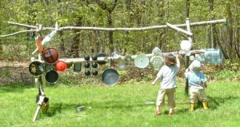
DIY STrumies:
some rubber bands, a box, some creativity, and you are good to go! This activity was an extension to a book – a really neat one, too!
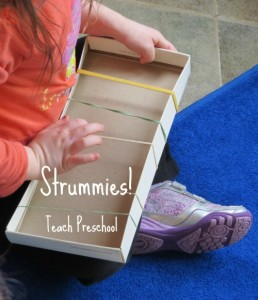
Singing Straws:
Now this one looks awesome.
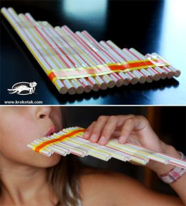
Popsicle Stick Harmonia by Housing a Forest :
This homemade musical instrument we have already tried, and it is the ideal blend of simplicity and fun! Just grab some Coloured Popsicle Stick and rubber bands, and you’re set.
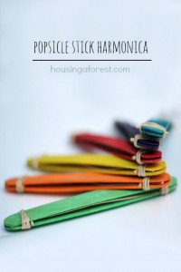
DIY Wooden Instruments :
These are perhaps more adult made, but simply gorgeous and durable too.
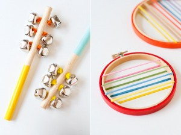
Jingle Bell And Ankle Braclets :
put these little gems – made with painted Wooden Heads and jingle bells on your ankle and just TRY to walk normally
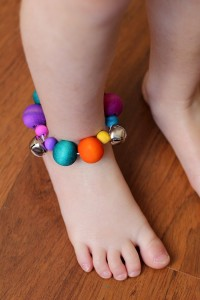
Baby Guitar by House of Burke :
Starring Rockstar baby Kingston and supplies you already have!
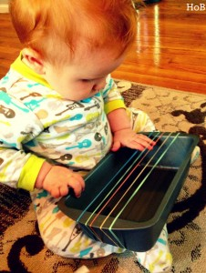
Cardboard Guiro :
I simply love how big this musical instrument is! Perfect for little ones who need to burn off some energy .
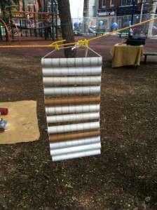